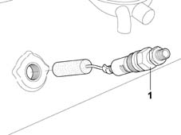
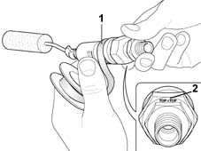

1043A24 lpg tank 80 percent filling valve r r with lpg tank removed
- Path
- Procedures > 10 ENGINE UNIT > 1043 LGP TANK AND PIPES > 1043A gpl tank > 1043A24 lpg tank 80 percent filling valve r r with lpg tank removed
- Kind
- repair procedure (removal / refitting; the operation number is the code)
- Applies to
- engines: 1.6 16v; all production periods; only with equipment: GPOWER
- Interactive page
- https://sloeber94.github.io/elrnDB-fMltpl/en/#/2891494
Applies to: engines: 1.6 16v; all production periods; only with equipment: GPOWER and Euro 3
 Removing
Removing
 Refitting
RefittingBefore carrying out any operations to the 80% valve, discharge any air remaining inside the tank following the procedure described 1043A08 lpg tank check seal .
1. Working with a special spanner, gradually undo the 80% valve to release any residual pressurized air, then remove the 80% valve.
Thoroughly clean any teflon residues from the housing on the tank for the 80% valve to ensure a perfect seal for the valve.

Applies to: engines: 1.6 16v; all production periods; only with equipment: GPOWER and Euro 3
Refitting
Removing1. Wrap teflon bands several times around the threaded part of the 80% valve, working in the opposite direction to the tightening direction of the actual valve on the tank.
Leave the first threads uncovered to allow the 80% valve to fit in the housing on the tank.
2. Fully tighten the 80% valve taking care to position it with the word TOP on the outer hexagon of the valve at the top.
 | Fastening | Component | Ø | Value (daNm) |
|---|---|---|---|---|
- | - | LPG TANK FILLER VALVE 80.%. | - | (wording TOP 'uppermost) 10 |

Applies to: engines: 1.6 16v; all production periods; only with equipment: GPOWER and Euro 3